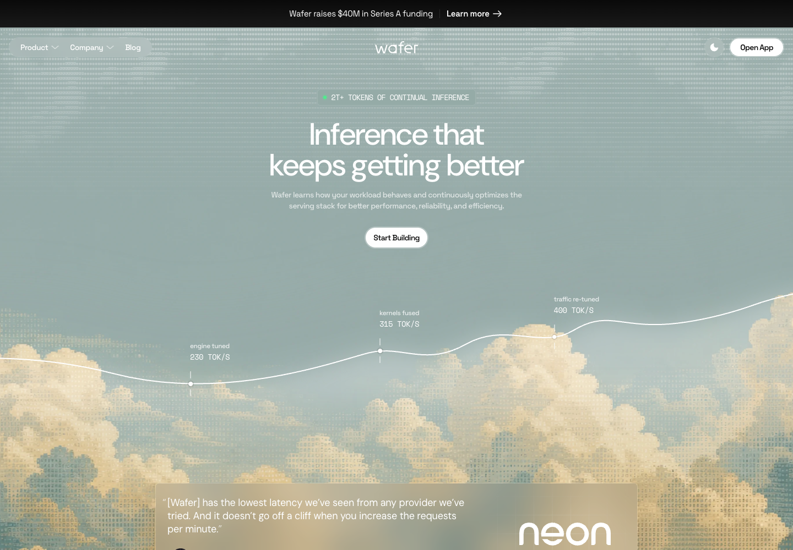
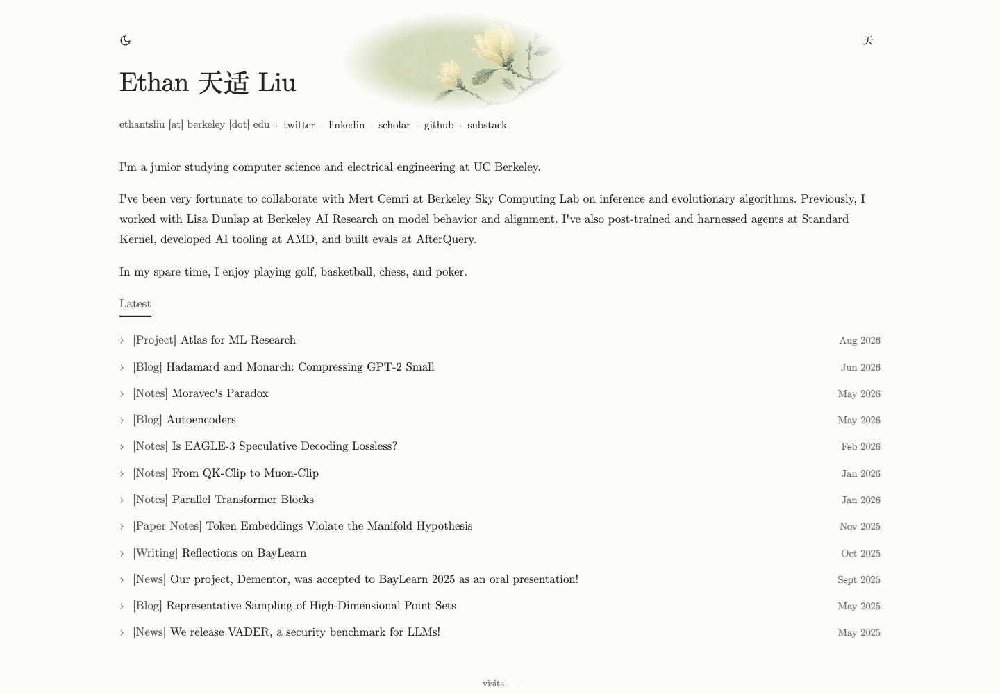
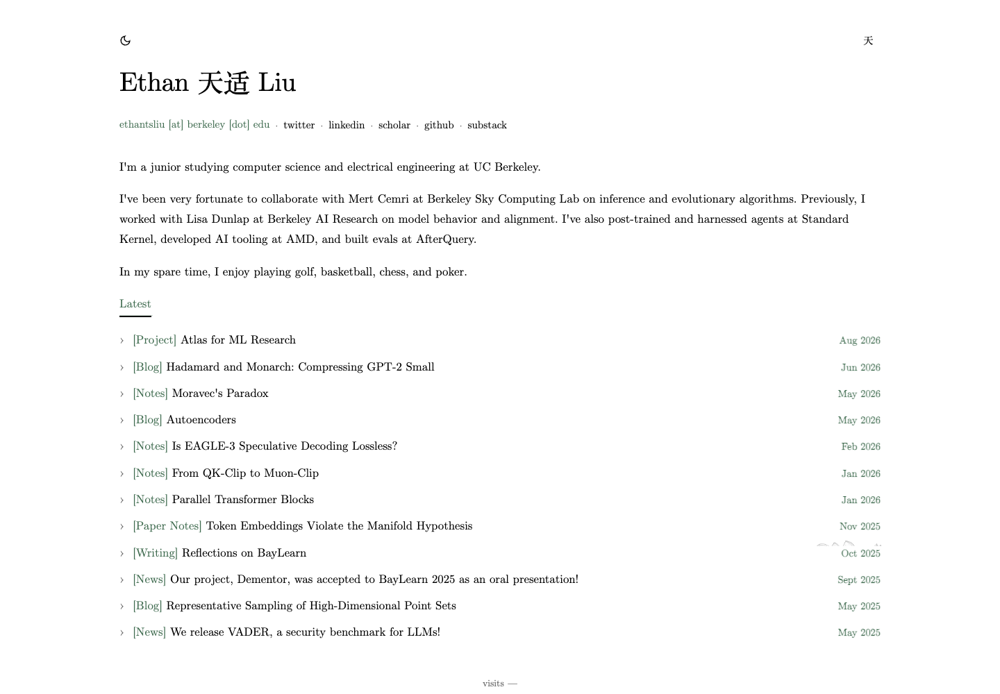

The composition needs to change.
I copied a surface texture and treated the artwork as an accessory. The reference’s appeal depends on the relationship between its image, typography, and open space. Changing opacity could not establish that relationship.


Both pages were captured at 1440 × 1000 and 390 × 844. “View as shapes” exposes the dominant visual groups, following NN/g’s hierarchy review technique. Screenshots open at their original size.
What the comparison shows
| Aspect | Wafer | My experiment |
|---|---|---|
| Canvas | Large forms extend beyond the viewport. The background supplies the setting. | An enclosed oval creates a separate decorative object. |
| Hierarchy | A short, prominent headline anchors the scene. | The added image introduces another focal point above the same broad text rows. |
| Open space | The quiet area is where the main message belongs. | Empty space surrounds an ornament with little relation to the reading sequence. |
| Mobile | The scene is recropped around the message. | The illustration becomes a small badge above the name. |
Visual observations from Wafer and the local experiment. The conclusion that the experiment feels pasted on is my design judgment.
What the reading changes
NN/g: Aesthetic and Minimalist Design separates clarity and usefulness from the visual minimalism trend. Aesthetics matter, and every element—including empty space—needs a purpose.
NN/g: Visual Hierarchy recommends defining content priorities before styling them. Relative size, contrast, and proximity establish the reading order.
NN/g: Characteristics of Minimalism allows strong imagery within a restrained interface. Its descriptive study does not prove that pale colors, small images, or a particular layout will suit this site.
Dieter Rams via Vitsœ emphasizes coherent detail and restraint. Applied here, fewer well-resolved decisions would be more useful than twelve interchangeable decorations.
The next design brief
This is a proposed direction informed by the comparison, not a tested redesign.
- Compose the introduction as one region. Name, short introduction, contact details, and illustration should share a deliberate arrangement. Keep the academic serif identity.
- Give the artwork room at the outer edge. Use a large, clear form entering from the page boundary, with a naturally empty area for text. Replace the closed oval treatment.
- Build the asset for this layout. The current sage-filled landscape images need a different composition to meet a neutral reading surface naturally. Repeated masking is concealing that mismatch.
- Keep the reading sequence intact. The biography should lead directly into Latest. Set a comfortable text measure and consistent alignment; the artwork should not insert an extra section.
- Use one graphic language across pages. Preserve its scale and texture through deliberate desktop and mobile crops. Use the same accent roles consistently, with high-contrast prose.
For the next pass, the review criteria are concrete: the image should feel attached to the page boundary; the name and work should lead attention; the graphic texture should be visible at normal size; the mobile layout should preserve that relationship.
What I got wrong
I interpreted “calm” as progressively smaller and fainter. I then treated your feedback as a request to reverse that intensity. Both responses kept the same faulty premise. Agent agreement on that premise was not evidence of a successful design, and functioning controls did not establish visual quality.
Original site, before the background experiment
